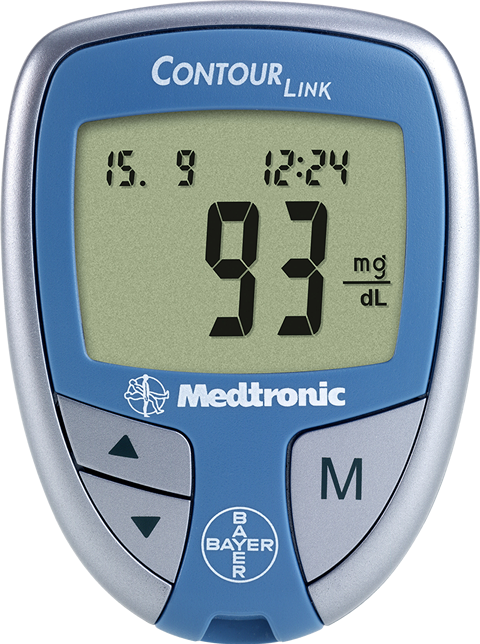

Contour® Link Medidor de Glucosa en Sangre 

DESCRIPCIÓN:
Sistema portátil para medición de glucosa en sangre con conectividad para algunos modelos de bombas de insulina Medtronic. Listo para usar y obtener resultados confiables al sacarlo del empaque.
CARACTERÍSTICAS:
El Glucómetro Contour® Link está diseñado especialmente para usuarios de ciertos modelos de bombas de insulina Medtronic, ya que gracias a su conectividad con dichas bombas ambos aparatos (medidor de glucosa y bomba de insulina) trabajan en conjunto.
El sistema no requiere ningún tipo de chip, código o configuración inicial, el Glucómetro Contour® Link está listo para realizar determinaciones de glucosa en sangre al sacarlo del empaque, obteniendo un resultado fácil, rápido, preciso y confiable en tan sólo segundos y con una mínima cantidad de muestra de sangre.
Contour® Link únicamente está a la venta para personas con bombas de insulina Medtronic compatibles (contactar al centro de atención Medtronic o de Ascensia Diabetes Care para mayor información).
Consulte a su médico.
Registro: 0664E2013 SSA
DATOS COMPLEMENTARIOS: Para mayor información favor de comunicarse a:
Ascensia Diabetes Care México, S. de R.L. de C.V.
Teléfonos: 9171-1057, 01-800-3352-6266
e-mail: support@contournext.com
www.diabetes.ascensia.com